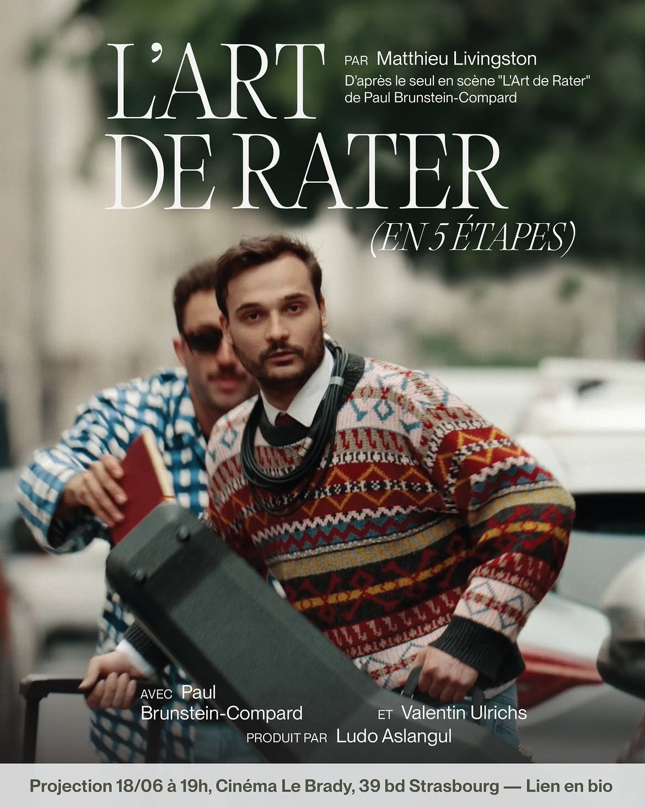

Regarde mes vidéos
Découvre mon stand-up, mes chansons improvisées, mon passage télé et mon court métrage.
Regarde mes vidéosTrois vidéos sur Instagram


Découvre mes extraitsStand-up · impro musicale
Viens passer une soirée au PouletMusique · improvisation · proximité
Viens au prochain plateau →Entre dans la salle : découvre deux moments de musique et d’improvisation au plus près du public.
L'Art de rater (en 5 étapes)Court métrage
Tiré de L'Art de rater, mon seul-en-scène musical, ce court métrage transpose mon univers à l’écran : un artiste qui rate tout avec beaucoup d’application. Découvre l’annonce de sa projection au cinéma Le Brady, à Paris.
